Torneio Mallister
História e Formato
Criado em 2017 por Desmond Mallister do Chalé de Despina, o Torneio Mallister é um evento anual que reune os semideuses do Meio-Sangue em batalhas acirradas com o objetivo de aprimorar as habilidades e conhecimentos mágicos de seus participantes e descobrir quem são as maiores promessas da nova geração do mundo dos semideuses. Totalizando 6 edições completas, o Torneio Mallister rapidamente adquiriu notoriedade e fama sendo considerado atualmente o evento desportivo mais importante do mundo mágico, recebendo visitantes do mundo todo e em ocasiões especiais até mesmo os proprios deuses do olimpo. Uma chance de ouro para aqueles que buscam provar seu valor perante os olhos de todos e eternizar seu legado na história.
A 7° edição do Torneio Mallister será disputada por 12 equipes, totalizando ao todo 60 semideuses participantes. Cada membro dos Zodiacos será reponsável por uma equipe, tendo o dever de escolher a seu próprio critério os 5 semideuses que iram compor seu time, além de ser o mentor e conselheiro da equipe durante todas as batalhas do torneio. A 7° edição do Torneio Mallister acontecerá em duas etapas: A primeira etapa será o Play-In onde após um sorteio de confrontos, as 12 equipes se enfrentarão em uma batalha 5v5 na Arena do Meio-Sangue. As 6 equipes vencendoras avançam para a próxima fase enquanto as 6 equipes perdedoras são prontamente eliminadas. A segunda etapa acontecerá no formato de eliminação dupla (Upper e Lower Bracket). Baseado no desempenho apresentado na primeira etapa que será avaliado por uma bancada de notórios jurados, as equipes que terminarem entre 1° e 4° lugar vão para chave superior (Upper Bracket) sendo válido destacar que o 1° colocado tem o direito de escolher o adversário ao qual deseja enfrentar em seu primeiro confronto. As equipes com o pior desempenho, ou seja, que terminarem na 5° e 6° colocação vão para a chave inferior (Lower Bracket). A segunda etapa do Torneio Mallister será uma melhor de 1. Quem perder na chave inferior está eliminado, enquanto quem perder na chave superior será enviado para chave inferior, recebendo uma segunda chance de escrever seu nome na história. A 7° edição também contara com algo inédito, a chamada "Caixa Misteriosa", um dispositivo mágico responsável por determinar qual história será contada em cada confronto. Um combate de dragões?. Uma caçada a um monstro antigo que atormenta uma cidade?. A tarefa de defender um castelo contra uma invasão?. Uma batalha de conceitos no Labirinto de Dédalo? Ou algo ainda mais sombrio que adormece na infinidade de possibilidades da Caixa Misteriosa.
Campeões Historicos
"A Glória Eterna! Aqui estão os únicos que conquistaram com sangue e magia a honra de erguer a Taça de Inverno e eternizaram seus nomes nas estrelas para que seu brilho jamais seja apagado"
Campeões da 1° Edição: Ryosuke Tenma , Jesse Ashford, Grace Jast, Manny Santiago e Nico Belligham.
Golpe Final: Rajada Prismatica de Ryosuke Tenma
Campeões da 2° Edição: Virigil LeVert, Yoon Tae-Woo e Mia Houston.
Golpe Final: Mordida do Diabrete dos Sonhos de Yoon Tae-Woo.
Campeões da 3° Edição: Diego Zamorano, Alisha Carter, Klaus Schroder, Amanda Raven e Reese Wolf.
Golpe Final: Dragão Meteoro de Reese Wolf.
Campeões da 4° Edição: Razor Fowler, Yaroslav Zhirkov e
Rebecca Norton.
Golpe Final: Corte da Katana de Razor Fowler.
Campeões da 5° Edição: Trent Redmond, Furaha Bellerose, Ashley Grice, Dai Xiao-Long e Soren Sorloth.
Golpe Final: Raio Lunar de Trent Redmond em sua 3° Forma.
Campeões da 6° Edição: Floyd Galloway, Devan Grealish e Jason Best.
Golpe Final: Raio Negro de Devan Grealish.